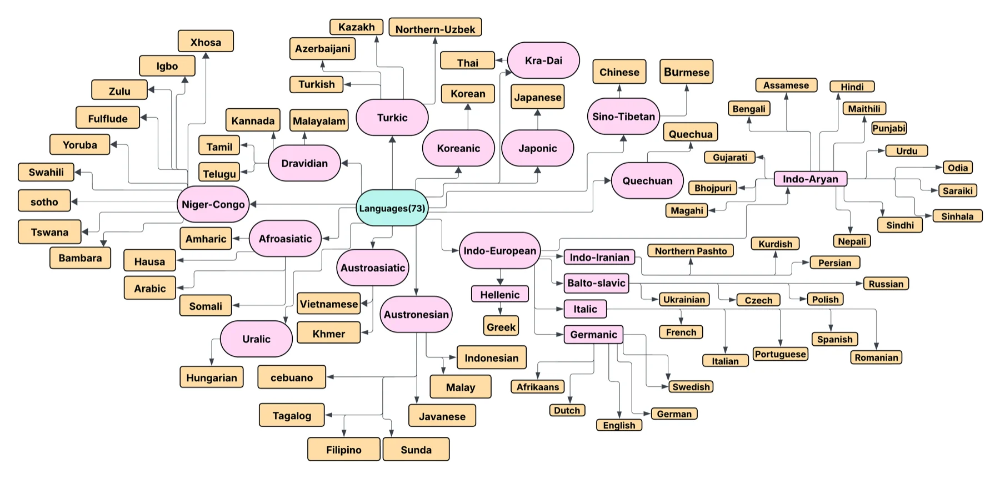

KuralHubDatasets
Speech emotion recognition datasets by language
We searched for emotional speech datasets in the 70 most widely spoken languages (by Ethnologue). 45 of them have at least one, and for the other 25 we found none. In all, 90 datasets are documented here.
Each language has its own page with the language family, ISO code and, for every dataset: emotion labels, size, speakers, recording setup, licence, access link, original paper and a BibTeX entry. The pages are generated from the Markdown files in the repository's datasets/ folder. To add a dataset, see CONTRIBUTING.md.
Download: datasets.json · languages.json
Missing a dataset? Suggest it with a short form or open a pull request using the template. 25 languages still have none.
Languages
| Language | Family | ISO | Datasets | Dataset names | Benchmarked |
|---|---|---|---|---|---|
| Afrikaans | Indo-European | af | 1 | AfrikaansSE | yes |
| Amharic | Afro-Asiatic | am | 1 | Amharic Speech Emotion Dataset (ASED) | yes |
| Arabic | Afro-Asiatic | ar | 2 | ANAD, BAVED | yes |
| Assamese | Indo-European | as | 2 | Assamese Emotional Speech Corpus, Assamese Emotional Speech Dataset | |
| Azerbaijani | Turkic | az | 0 | none found | |
| Bambara | Niger-Congo | bm | 0 | none found | |
| Bengali | Indo-European | bn | 4 | BANSpEmo, BanglaSER, KBES, SUBESCO | yes |
| Bhojpuri | Indo-European | bho | 0 | none found | |
| Burmese | Sino-Tibetan | mya | 3 | BMISEC, ESMBS, New et al. (2001) | |
| Cebuano | Austronesian | ceb | 0 | none found | |
| Chinese | Sino-Tibetan | zh | 8 | CASIA, CHEAVD, CHEAVD 2.0, EESDB, EMOVIE, ESD, M3ED, SECEPDB | yes |
| Czech | Indo-European | cs | 2 | CDSE, Slavic Call Center Emotional Speech Corpus | |
| Dutch | Indo-European | nl | 1 | PICKA-NH | |
| English | Indo-European | en | 3 | IEMOCAP, IESC, RAVDESS | yes |
| Filipino | Austronesian | fil | 1 | Filipino Multimodal Emotion Database (FilMED) | |
| French | Indo-European | fr | 2 | CaFE, OréauFR | yes |
| Fulfulde | Niger-Congo | ff | 0 | none found | |
| German | Indo-European | de | 1 | EmoDB | yes |
| Greek | Indo-European | el | 3 | AESDD, GreThE, SEWA | yes |
| Gujarati | Indo-European | gu | 1 | Tank et al. (2020) | |
| Hausa | Afro-Asiatic | ha | 0 | none found | |
| Hindi | Indo-European | hi | 3 | Bansal And Dev et al., IITKGP-SEHSC, VishalB | yes |
| Hungarian | Uralic | hu | 2 | HESD, SEWA | yes |
| Igbo | Niger-Congo | ig | 0 | none found | |
| Indonesian | Austronesian | id | 2 | Fahmi et al (2020), IndoWaveSentiment | yes |
| Italian | Indo-European | it | 3 | DEMoS, EMOVO, Emozionalmente | yes |
| Japanese | Japonic | ja | 2 | JVNV, Keio-ESD | yes |
| Javanese | Austronesian | jv | 1 | Java-SED | |
| Kannada | Dravidian | kn | 2 | Agrawal et al (2022), KES | yes |
| Kazakh | Turkic | kk | 2 | KazEmoTTS, Kazakh-Russian Emotion Corpus | yes |
| Khmer | Austroasiatic | km | 0 | none found | |
| Korean | Koreanic | ko | 1 | KESDy18 | yes |
| Kurdish | Indo-European | ku | 2 | Kurdish Emotional Speech Database, Nematullah et al. (2024) | |
| Magahi | Indo-European | mag | 0 | none found | |
| Maithili | Indo-European | mai | 0 | none found | |
| Malay | Austronesian | ms | 1 | Emolah | |
| Malayalam | Dravidian | ml | 4 | IIITSaint-EmoMDB, Kannur Malayalam Speech Emotion Recognition (KMSER) Dataset, MAVES DB, Malayalam Speech Emotion Dataset | |
| Nepali | Indo-European | ne | 0 | none found | |
| Nigerian Pidgin | English-based creole | pcm | 0 | none found | |
| Northern Pashto | Indo-European | ps | 0 | none found | |
| Northern Uzbek | Turkic | uzn | 0 | none found | |
| Odia | Indo-European | or | 1 | SITB-OSED | yes |
| Persian | Indo-European | fa | 1 | ShEMO | yes |
| Polish | Indo-European | pl | 3 | Cichosz and Slot (2005), Sapinski et al. (2019), nEMO | yes |
| Portuguese | Indo-European | pt | 2 | VERBO, emoUERJ | yes |
| Punjabi | Indo-European | pa | 1 | PEMO | |
| Quechua | Quechuan | qu | 1 | Quechua Collao Corpus | yes |
| Romanian | Indo-European | ro | 1 | SRoL | |
| Russian | Indo-European | ru | 2 | Dusha, RESD | yes |
| Saraiki | Indo-European | skr | 0 | none found | |
| Sindhi | Indo-European | sd | 1 | Urdu-Sindhi Speech Emotion Corpus | |
| Sinhala | Indo-European | si | 0 | none found | |
| Somali | Afro-Asiatic | so | 0 | none found | |
| Sotho | Niger-Congo | st | 0 | none found | |
| Spanish | Indo-European | es | 3 | EMOVOME, ESCorpus-PE, MESD | yes |
| Sundanese | Austronesian | sun | 0 | none found | |
| Swahili | Niger-Congo | sw | 1 | Kenyan Swahili SER | yes |
| Swedish | Indo-European | sv | 2 | EU-Emotion Voice Database, Swedish Voice Provider Emotional Speech Corpus | |
| Tagalog | Austronesian | tl | 0 | none found | |
| Tamil | Dravidian | ta | 3 | EmoTa, Ram, C. Sunitha, et al., TaMaR-EmoDB | yes |
| Telugu | Dravidian | te | 2 | IITKGP-SESC, Sowmith et al (2024) | yes |
| Thai | Kra-Dai | th | 1 | Thai Speech Emotion Dataset | |
| Tswana | Niger-Congo | tn | 0 | none found | |
| Turkish | Turkic | tr | 2 | Oflazoglu et al (2011), TurEV-DB | yes |
| Ukrainian | Indo-European | uk | 0 | none found | |
| Urdu | Indo-European | ur | 2 | URDU-Dataset, UrduSER | yes |
| Vietnamese | Austroasiatic | vi | 1 | VNEMOS | |
| Xhosa | Niger-Congo | xho | 0 | none found | |
| Yoruba | Niger-Congo | yo | 0 | none found | |
| Zulu | Niger-Congo | zul | 0 | none found |


All datasets
| Dataset | Language | Type | Emotion labels | Samples | Recording | Access | Licence |
|---|---|---|---|---|---|---|---|
| AfrikaansSE | Afrikaans | Audio | Anticipation, Joy, Trust, Fear, Surprise, Sadness, Disgust and Anger | 800 | Studio (Local Youtube Channel) | On request | Creative Commons Attribution license |
| Amharic Speech Emotion Dataset (ASED) | Amharic | Audio | Neutral, Fearful, Happy, Sad, Angry | 2,474 | Acted | Open | |
| ANAD | Arabic | Audio | Happy, Angry, Surprised | 1384 | Spontaneous | Open | CC BY-NC-SA 4.0 |
| BAVED | Arabic | Audio | Low, Neutral, High | 1935 | Acted | Open | |
| Assamese Emotional Speech Corpus | Assamese | Audio | Angry, Happy, Sad, Neutral | 800 | Acted (controlled settings) | On request | CC BY 4.0 |
| Assamese Emotional Speech Dataset | Assamese | Audio | Calm, Neutral, Anger, Sad, Happy, Surprise, Disgust | 1750 | Acted (controlled settings) | On request | |
| BanglaSER | Bengali | Audio | Angry, Happy, Neutral, Sad, and Surprise | 1467 | Acted | Open | CC-BY 4.0 |
| BANSpEmo | Bengali | Audio | Disgust, Happy, Sad, Surprised, Anger, Fear | 792 | Acted | Open | CC-BY 4.0 |
| KBES | Bengali | Audio | Neutral, Happy (Low), Happy (High), Sad (Low), Sad (High), Angry (Low), Angry (High), Disgust (Low), Disgust (High) | 900 | Acted | Open | CC-BY 4.0 |
| SUBESCO | Bengali | Audio | Anger, Disgust, Fear, Happiness, Neutral, Sadness, and Surprise | 7000 | Acted | Open | CC-BY 4.0 |
| BMISEC | Burmese | Audio | Angry, Happy, Disgust, Fear, Sad, Surprise, Neutral | 1,332 | Spontaneous (Myanmar movies, interviews) | Open | |
| ESMBS | Burmese | Audio | Anger, happiness, sadness, disgust, fear, surprise | 720 | Studio | On request | |
| New et al. (2001) | Burmese | Audio | Anger, Dislike, Fear, Happiness, Sadness and Surprise | Spontaneous | On request | ||
| CASIA | Chinese | Audio | Anger, Fear, Happy, Neutral, Sad, Surprise | 7,200 | Acted | Open | Apache 2.0 |
| CHEAVD | Chinese | Audio-Visual | Anger, Anxious, Sadness, Surprise, Disgust, Fear, Happiness, Worried | 2,322 | Acted | Open | |
| CHEAVD 2.0 | Chinese | Audio-Visual | Anger, Anxious, Sadness, Surprise, Disgust, Happiness, Worried, Neutral | 7,030 | Spontaneous | Open | |
| EESDB | Chinese | Audio | Anger, Disgust, Fear, Happiness, Neutral, Sadness, and Surprise | 400 | Spontaneous | On request | |
| EMOVIE | Chinese | Audio / Text | 5-point polarity scale (Strong Negative to Strong Positive) | 9,724 | Movie speech | Open | |
| ESD | Chinese | Audio | Neutral, Anger, Happiness, Sadness, Surprise | 17,500 | Spontaneous | On request | |
| M3ED | Chinese | Multimodal | Happy, Neutral, Sad, Disgust, Anger, Fear, Surprise | 24,449 | Acted (TV series) | Open | |
| SECEPDB | Chinese | Multimodal | Anxiety, boredom, Anger, Disgust, Happiness, Neutral, Sadness | 810 | Spontaneous | On request | |
| CDSE | Czech | Audio | Happiness, Anger, Sadness, Neutral | Spontaneous (extracted from radio and TV broadcasts) | On request | ||
| Slavic Call Center Emotional Speech Corpus | Czech | Audio | Anger, Happiness, Sadness, Surprise, Neutral | 600 | Spontaneous (real call center interactions) | On request | |
| PICKA-NH | Dutch | Audio | Happiness, Anger, Sadness | Studio | Open | MIT, CC-BY | |
| IEMOCAP | English | Audio | Happy, Anger, Sadness, Frustration, and Neutral | 12000+ | Acted | On request | Dataset-Specific |
| IESC | English | Audio | Neutral, Happy, Angry, Sad,and Fear | 600 | Acted | Open | |
| RAVDESS | English | Audio | Calm, Happy, Sad, Angry, Fearful, Surprise, and Disgust | 1440 | Acted | Open | CC-BY 4.0 |
| Filipino Multimodal Emotion Database (FilMED) | Filipino | Multimodal (Audio-Video) | kasiyahan (happiness), kalungkutan (sadness), galit (anger), takot (fear), gulat (surprise), pandidiri (disgust) | 1,440 | Studio (acted) and spontaneous expressions | On request | |
| CaFE | French | Audio | Sadness, Happiness, Anger, Fear, Disgust, Surprise, and Neutral | 936 | Acted | Open | CC-BY 4.0 |
| OréauFR | French | Audio | Anger, Disgust, Fear, Happiness, Sadness, Surprise, Neutral | 502 | Acted | Open | CC-BY 4.0 |
| EmoDB | German | Audio | Anger, Boredom, Anxiety, Happy, Sadness, Disgust, and Neutral | 535 | Acted | Open | |
| AESDD | Greek | Audio | Happy, Sad, Angry, Fear, Disgust | 500 | Acted | Open | |
| GreThE | Greek | Audio | emotions are characterized using Valence(Negative/Neutral/Positive) and Arousal(Weak/Neutral/Strong). | 500 | Acted (Theatrical Plays) | Open | |
| SEWA | Greek | Multimodal (Audio, Video) | emotions are characterized using valence and arousal. | 1990 | Spontaneous (natural interactions) | On request | Dataset-Specific - SEWA EULA |
| Tank et al. (2020) | Gujarati | Audio | Sadness, Surprise, Anger, Disgust, Fear, Happiness | 1296 | Acted | On request | |
| Bansal And Dev et al. | Hindi | Audio | 6048 | Acted | On request | ||
| IITKGP-SEHSC | Hindi | Audio | Anger, Disgust, Fear, Happy, Neutral, Sad, Sarcastic and Surprise | 12000 | Acted | On request | |
| VishalB | Hindi | Audio | Anger, Disgust, Fear, Happy, Neutral, Sad, Sarcastic and Surprise | 3200 | Acted | Open | |
| HESD | Hungarian | Audio | Fear, Sadness, Anger, Surprise, Disgust, Joy, Excitement, Neutral | 888 | Acted(Non Professional Speakers - Quiet Office Room) | On request | |
| SEWA | Hungarian | Multimodal (Audio, Video) | emotions are characterized using valence and arousal. | 1990 | Spontaneous (natural interactions) | On request | Dataset-Specific - SEWA EULA |
| Fahmi et al (2020) | Indonesian | Audio | Happy, Sad, Angry, Neutral | 965 | Acted | On request | |
| IndoWaveSentiment | Indonesian | Audio | Neutral, Happy, Surprised, Disgusted, and Disappointed | 300 | Acted | Open | CC-BY 4.0 |
| DEMoS | Italian | Audio | Anger, Sadness, Happiness, Fear, Surprise, Disgust, Guilt | 6697 | Acted | On request | |
| EMOVO | Italian | Audio | Disgust, Fear, Anger, Joy, Surprise, Sadness, Neutral | 564 | Acted | Open | |
| Emozionalmente | Italian | Audio | Anger, Disgust, Fear, Joy, Sadness, Surprise, Neutral | 6902 | Acted | Open | CC-BY 4.0 |
| JVNV | Japanese | Audio | Anger, Disgust, Fear, Happiness, Sadness, and Surprise | 1615 | Acted | Open | CC-BY-SA 4.0 |
| Keio-ESD | Japanese | Audio | Anger, joy, disgust, contempt, amusement, worry, kindness, relief, indignation, shame, ... (47 types in total) | Acted | Open | ||
| Java-SED | Javanese | Audio | Neutral, Sad, Happy, Surprised, Fear and Anger | 1680 | Acted | On request | |
| Agrawal et al (2022) | Kannada | Audio | Anger, Sadness, Surprise, Happiness, Fear, Neutral | 468 | Acted | Open | CC-BY 4.0 |
| KES | Kannada | Audio | Acted | On request | |||
| Kazakh-Russian Emotion Corpus | Kazakh | Audio | Happiness, Sadness, Anger, Neutral, Boredom, Disgust, Fear | 16160 | Acted | On request | |
| KazEmoTTS | Kazakh | Audio + Text | Happy, Sad, Angry, Neutral, Scared, and Surprised | 54,760 | Studio | On request | CC-BY 4.0 |
| KESDy18 | Korean | Audio | Angry, happy, neutral, sad, disgust, fear, surprise | 2880 | Studio | Open | Dataset-Specific |
| Kurdish Emotional Speech Database | Kurdish | Audio | Anger, Happiness, Sad, Fear, Boredom, Surprise, and Neutral | 3360 | Acted | On request | |
| Nematullah et al. (2024) | Kurdish | Audio | Neutral, Sadness, Happiness, and Anger | 287 | Studio | On request | |
| Emolah | Malay | Audio | Happy, Sad, Angry, Neutral | Spontaneous | On request | Creative Commons Attribution License | |
| IIITSaint-EmoMDB | Malayalam | Audio | Happy, Sad, Angry and Neutral or emotion ratings at valence and arousal | On request | |||
| Kannur Malayalam Speech Emotion Recognition (KMSER) Dataset | Malayalam | Audio | Happy, Angry, Sad, Neutral | Acted | On request | ||
| Malayalam Speech Emotion Dataset | Malayalam | Audio | Happy, Sad, Angry, Neutral | Elicited | On request | ||
| MAVES DB | Malayalam | Multimodal (Audio-Visual) | Open | CC BY 4.0 | |||
| SITB-OSED | Odia | Audio | Anger, Surprise, Happy, Sadness, Disgust, Fear | 12,110 | Studio | Open | |
| ShEMO | Persian | Audio | Anger, Fear, Happiness, Sadness, Surprise, Neutral | 3000 | Acted | Open | |
| Cichosz and Slot (2005) | Polish | Audio | Neutral, Joy, Anger, Sadness, Fear, Boredom | 240 utterances | Acted | On request | |
| nEMO | Polish | Audio | Anger, Fear, Happiness, Sadness, Surprise, Neutral | 4481 | Studio | Open | CC BY-NC-SA 4.0 |
| Sapinski et al. (2019) | Polish | Audio-Visual | Happy, Sad, Angry, Disgust, Fear, Surprise | 560 per modality | Studio | On request | |
| emoUERJ | Portuguese | Audio | Happy, Sad, Angry, Neutral | 377 | Acted | Open | CC-BY 4.0 |
| VERBO | Portuguese | Audio | Happy, Disgust, Fear, Neutral, Anger, Surprise, and Sadness | 1176 | Acted | On request | |
| PEMO | Punjabi | Audio | Anger, Sad, Happy, Neutral | 22000 | Acted | On request | |
| Quechua Collao Corpus | Quechua | Audio | Happy, Sad, Bored, Fear, Sleepy, Calm, Excited, Angry, and Neutral | 12420 | Acted | Open | CC BY 4.0 |
| SRoL | Romanian | Audio | Happiness, Sadness, Fury, Nutral | 396 | Acted | Open | |
| Dusha | Russian | Audio | Happiness (Positive), Sadness, Anger and Neutral | 300000 | Spontaneous | Open | |
| RESD | Russian | Audio | Anger, Disgust, Fear, Enthusiasm, Happiness, Neutral, and Sadness | 1120 | Acted | Open | |
| Urdu-Sindhi Speech Emotion Corpus | Sindhi | Audio | Anger, Disgust, Happiness, Neutral, Sarcasm, Sadness, and Surprise | On request | |||
| EMOVOME | Spanish | Audio | Covering valence and arousal dimensions | 999 | Spontaneous | Open | CC-BY 4.0 |
| ESCorpus-PE | Spanish | Audio | three emotional dimensions Valence, Arousal, Dominance | 3749 | Spontaneous | Open | CC BY 4.0 |
| MESD | Spanish | Audio | Happy, Sad, Angry, Neutral, Fear, Disgust | 432 | Acted | Open | CC-BY 4.0 |
| Kenyan Swahili SER | Swahili | Audio | Sad, Happy, Surprised, Angry, Calm | Studio / Acted / Spontaneous | On request | ||
| EU-Emotion Voice Database | Swedish | Audio | Admiration, Amusement, Anger, Anxiety, Awe, Boredom, Disgust, Fear, Interest, Joy, Pleasure, Relief, Sadness, Satisfaction, Surprise, Triumph, Contempt, Embarrassment, Neutral, Pride | 2,159 | Acted (controlled settings) | On request | |
| Swedish Voice Provider Emotional Speech Corpus | Swedish | Audio | Not explicitly labeled; inferred categories include Neutral, Emphatic, and Negative | ~10,000 utterances | Spontaneous (recordings from voice-controlled telephone services) | On request | |
| EmoTa | Tamil | Audio | Happy, Sad, Angry, Fear, Neutral | 936 | Acted | Open | EmoTa Academic-Commercial |
| Ram, C. Sunitha, et al. | Tamil | Audio | Joy, Sad, Angry, Neutral, Fear | 95 | Acted | On request | |
| TaMaR-EmoDB | Tamil | Audio | Anger, Happy, Anxiety, Sad, Neutral | 1202 | Acted | On request | |
| IITKGP-SESC | Telugu | Audio | Happiness, Surprise, Anger, Disgust, Sadness, Fear, Sarcasm, Neutral | 12000 | Acted | On request | |
| Sowmith et al (2024) | Telugu | Audio | Happy, Sad, Angry, Neutral, Surprised | 458 | Acted | Open | Apache 2.0 |
| Thai Speech Emotion Dataset | Thai | Audio | Neutral, Anger, Happiness, Sadness, and Frustration | 27854 | Acted | Open | CC-BY-SA 4.0 |
| Oflazoglu et al (2011) | Turkish | Audio | Happy, Surprised, Sad, Angry, Fear, Neutral | 5304 | Acted | On request | |
| TurEV-DB | Turkish | Audio | Angry, Calm, Happy, Sad | 1735 | Acted | Open | CC-BY 4.0 |
| URDU-Dataset | Urdu | Audio | Happy, Sad, Angry, Neutral | 400 | Acted | Open | |
| UrduSER | Urdu | Audio | Angry, Fear, Boredom, Disgust, Happy, Neutral, and Sad | 3500 | Acted | Open | CC-BY 4.0 |
| VNEMOS | Vietnamese | Audio | Happy, Sad, Angry, Neutral, Anxiety | 250 | Acted and Spontaneous | On request |
Licence and access details are copied from each dataset's own documentation. Always check the original licence before using a dataset. If you use one, cite its authors. If KuralHub helped you find it, please also cite the KuralHub paper.